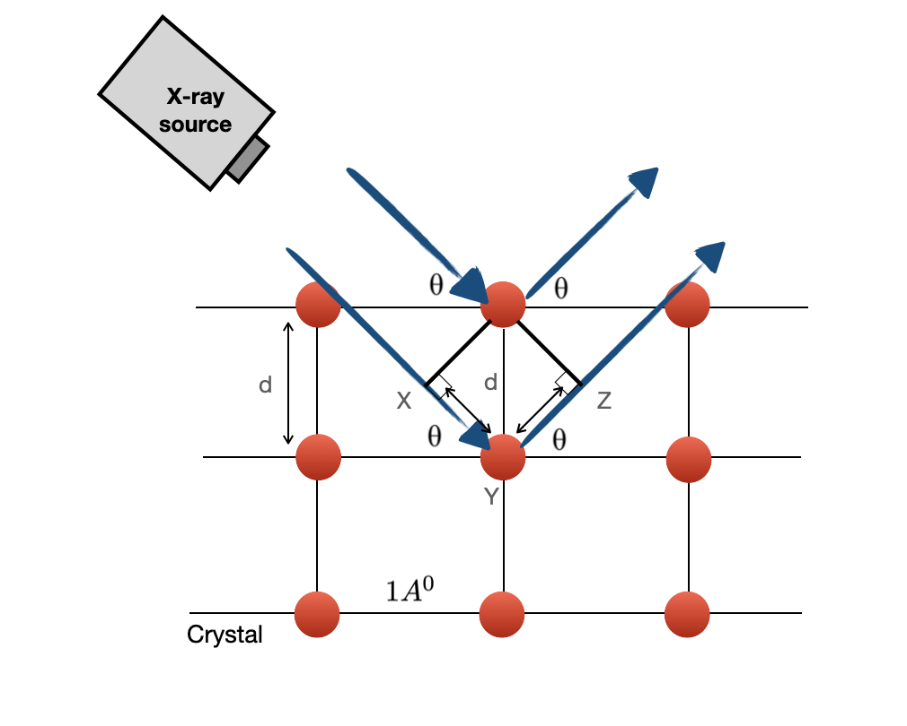
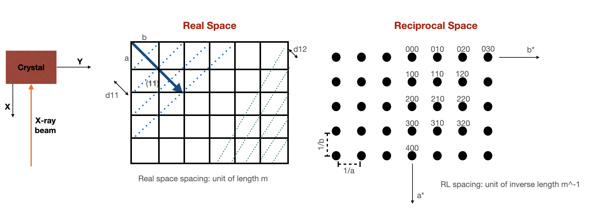
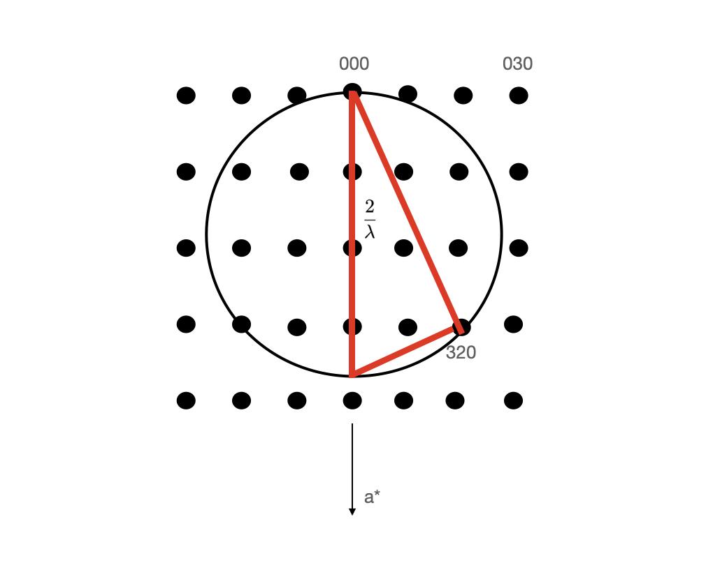
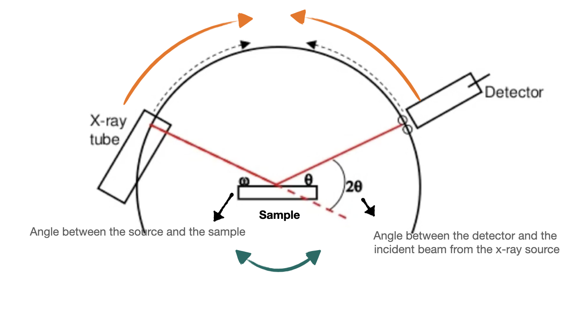
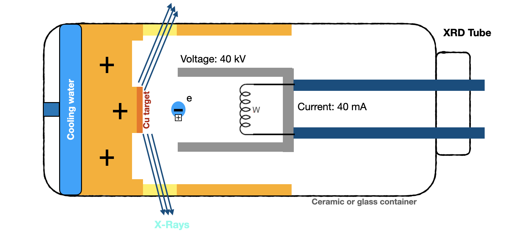
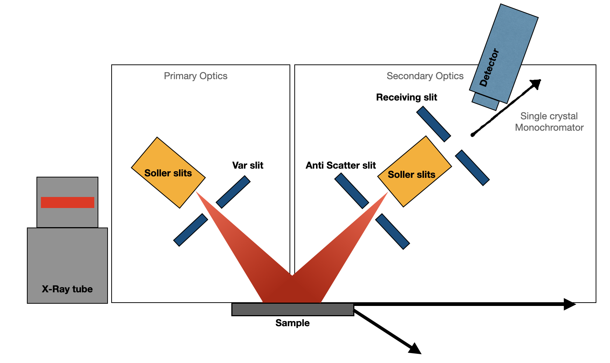
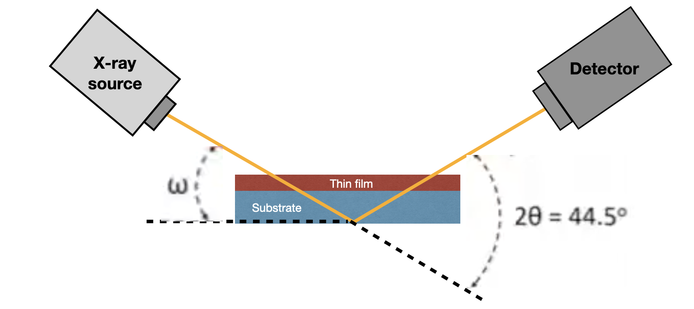
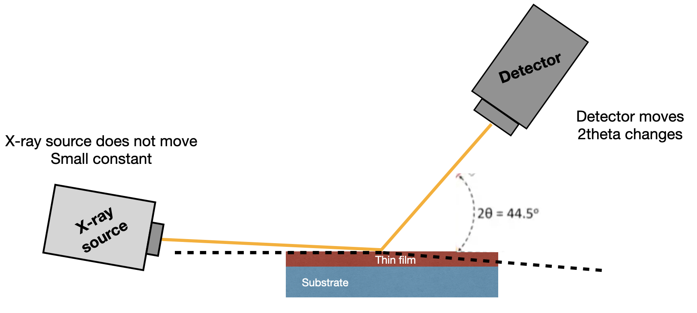
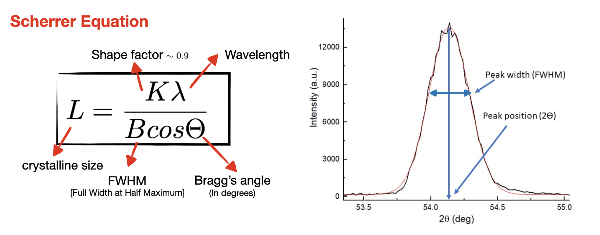

Slits
Slits control the angular divergence and spatial extent of the beam. Narrower slits generally improve angular resolution but reduce intensity.
Crystal Structure • Thin Films • Diffraction • Reciprocal Space
X-ray diffraction (XRD) is one of the most widely used techniques for studying crystalline materials. By measuring how X-rays scatter from periodic atomic planes, we can obtain information about crystal structure, lattice spacing, orientation, strain, phase, and crystalline quality.

Basic Principle
A crystalline material contains atoms arranged with long-range periodic order. Characteristic atomic and interplanar distances are on the ångström scale.
Visible light has a wavelength much larger than atomic-scale lattice spacing, so it is not suitable for probing this periodic structure through conventional diffraction.
X-rays have wavelengths comparable to interatomic distances. When an X-ray beam interacts with a crystal, waves scattered from different atomic planes interfere with one another.
The resulting diffraction pattern contains information about the underlying crystal structure.
Crystalline materials produce relatively sharp diffraction peaks because they contain long-range periodic order.
Amorphous materials lack this long-range periodicity and therefore generally produce broad diffuse scattering rather than well-defined Bragg peaks.
Bragg's Law
Bragg's law provides a simple geometrical picture of diffraction. Consider X-rays scattered from two parallel planes separated by an interplanar distance \(d\).
The ray scattered from the lower plane travels farther than the ray scattered from the upper plane. Constructive interference occurs when this path-length difference is an integer multiple of the X-ray wavelength.
Here, \(λ\) is the X-ray wavelength, \(d\) is the spacing between crystal planes, \(θ\) is the Bragg angle, and \(n\) is the order of diffraction.
When this condition is satisfied, scattered X-rays interfere constructively and a diffraction peak is detected.

Reciprocal Space
In real space, a crystal is described using lattice points, atomic positions, and families of crystallographic planes separated by characteristic distances \(d_{hkl}\).
Diffraction becomes much easier to visualize in reciprocal space. Each reciprocal-lattice point corresponds to a family of real-space crystal planes.
The distance of a reciprocal-lattice point from the origin is inversely related to the corresponding real-space interplanar spacing.
Therefore, a family of planes with a smaller real-space spacing appears farther from the reciprocal-space origin.
Reciprocal space is especially useful because the diffraction condition can be represented geometrically using the Ewald construction.

Ewald Construction
The Ewald construction provides a convenient way to determine which reciprocal-lattice points satisfy the diffraction condition for a particular wavelength and crystal orientation.
The incident X-ray beam is represented by a wavevector. Diffraction occurs when a reciprocal-lattice point satisfies the scattering geometry defined by the incident and diffracted wavevectors.
When the crystal is rotated, its reciprocal lattice rotates as well. Different reciprocal-lattice points therefore move into and out of the diffraction condition.
This is why changing the sample orientation allows different crystallographic planes to be measured.

Bragg's law describes diffraction using real-space crystal planes. The Ewald construction describes the same diffraction condition in reciprocal space.
Instrument Geometry
Laboratory X-ray diffractometers can use different mechanical configurations. In some systems the source and detector remain fixed while the sample moves, while in others the sample remains fixed and the source and detector rotate.
The angle between the incident beam and the sample surface is commonly represented by \(ω\), while the angle between the incident and diffracted beams is \(2θ\).
In a coupled symmetric scan, sample and detector motion are linked so that the scattering vector probes planes with a particular orientation relative to the surface.

X-Ray Generation
In a conventional laboratory X-ray tube, an electrical current heats a tungsten filament, which releases electrons through thermionic emission.
A high voltage accelerates these electrons toward a metallic target. When they strike the target, X-rays are generated through both bremsstrahlung radiation and characteristic atomic transitions.
Copper is commonly used as a target because Cu Kα radiation has a wavelength well suited to the atomic-scale spacings found in many crystalline materials.

Beam Conditioning
Slits control the angular divergence and spatial extent of the beam. Narrower slits generally improve angular resolution but reduce intensity.
A nickel filter is commonly used with a copper X-ray source to suppress Cu Kβ radiation before it reaches the detector.
Soller slits reduce divergence perpendicular to the diffraction plane and help maintain controlled beam geometry.
A monochromator narrows the wavelength distribution and suppresses unwanted radiation, which can improve peak definition and resolution.

XRD Optics
Primary optics condition the X-ray beam before it reaches the sample.
Depending on the configuration, this can include Soller slits, divergence slits, mirrors, and monochromators.
Adjusting the divergence slit changes the balance between beam intensity, illuminated area, and angular resolution.
Secondary optics condition the diffracted beam after interaction with the sample and before detection.
Typical elements include anti-scatter slits, receiving slits, Soller slits, filters, monochromators, and the detector itself.
Thin-Film Measurements
Conventional Bragg–Brentano geometry is widely used for phase identification and structural characterization.
In thin-film measurements, however, X-rays may penetrate deeply enough that the substrate contributes much more strongly than the film.
In grazing-incidence XRD, the incident angle is kept small while the detector scans through \(2θ\).
Reducing the incident angle decreases the penetration depth and can increase the relative contribution from the film compared with the substrate.


Very thin films contain much less diffracting material than their substrates. Grazing-incidence geometry can therefore improve the relative sensitivity to the film by limiting how deeply the beam penetrates.
Reading an XRD Pattern
A typical XRD result is displayed as diffraction intensity versus \(2θ\).
Several characteristics of the peaks contain structural information: position, intensity, width, shape, and which reflections are present.
Peak position is related through Bragg's law to the interplanar spacing. Shifts in peak position can indicate changes in lattice parameter, composition, or strain.
Intensity depends on the crystal structure factor, atomic arrangement, sample orientation, illuminated volume, and instrumental geometry.
Peak broadening can contain information about finite crystallite size, strain, defects, disorder, and instrumental resolution.
The appearance or suppression of particular reflections can reveal preferred orientation, texture, or epitaxial alignment.

Peak Broadening
One common approximation for estimating coherent crystallite size from diffraction peak broadening is the Scherrer relation.
Here, \(L\) is a characteristic crystallite size, \(K\) is a shape factor, \(λ\) is the X-ray wavelength, \(β\) is the peak width after accounting for instrumental broadening, and \(θ\) is the Bragg angle.
The equation should be interpreted carefully because strain, disorder, and instrument resolution can also contribute to peak broadening.
My Experience
From my research
I used X-ray diffraction extensively during my doctoral research to characterize epitaxial superconducting oxide thin films.
XRD provided structural feedback on film orientation, phase quality, lattice parameters, and crystalline alignment before the films were processed into transport devices.
I also used rocking-curve measurements to evaluate crystalline alignment and mosaic spread and to compare film quality across different growth conditions.
Materials to Devices
Structural characterization is often one of the first checkpoints after thin-film growth.
A fabrication process cannot fully compensate for poor starting material. If the film contains undesirable phases, strong misorientation, or significant structural defects, device performance may already be limited before lithography begins.
XRD therefore acts as an important bridge between thin-film growth, materials characterization, and device fabrication.
From Peaks to Structure
X-ray diffraction is powerful because a relatively simple measurement — intensity as a function of angle — contains information about atomic periodicity, crystallographic orientation, lattice spacing, strain, phase, and crystalline quality.